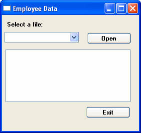
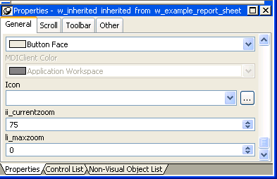

Previous Next
Using inheritance to build a window
When you build a window that inherits its definition—its
style, events, functions, structures, variables, controls, and scripts—from
an existing window, you save coding time. All you have to do is
modify the inherited definition to meet the requirements of the
current situation.
This section provides an overview of using inheritance in
the Window painter. The issues concerning inheritance with windows
are the same as the issues concerning inheritance with user objects
and menus. They are described in more detail in Chapter 13, "Understanding Inheritance ."
Building two windows with similar definitions
Assume your application needs two windows with similar definitions.
One window, w_employee, needs:
- A title (Employee
Data)
- Text that says Select a file:
- A drop-down list with a list of available employee
files
- An Open button with a script that opens the selected
file in a multiline edit box
- An Exit button with a script that asks the user
to confirm closing the window and then closes the window
The window looks like this:

The only differences in the second window, w_customer,
are that the title is Customer Data, the drop-down list
displays customer files instead of employee files, and there is
a Delete button so the user can delete files.
Your choices
To build these windows, you have three choices:
- Build two new windows from
scratch as described in "Building a new window"
- Build one window from scratch and then modify it
and save it under another name
- Use inheritance to build two windows that inherit
a definition from an ancestor window
Using inheritance
To build the two windows using inheritance, follow these steps:
- Create an ancestor window, w_ancestor,
that contains the text, drop-down list, and the open and exit buttons,
and save and close it.
 You cannot inherit a window from an existing window
when the existing window is open, and you cannot open a window when
its ancestor or descendant is open.
You cannot inherit a window from an existing window
when the existing window is open, and you cannot open a window when
its ancestor or descendant is open.
- Select File>Inherit, select w_ancestor in
the Inherit From dialog box, and click OK.
- Add the Employee Data title, specify that the DropDownListBox
control displays employee files, and save the window as w_employee.
- Select File>Inherit, select w_ancestor in
the Inherit From dialog box, and click OK.
- Add the Customer Data title, specify that the DropDownListBox
control displays customer files, add the Delete button, and save
the window as w_customer.
Advantages of using inheritance
Using inheritance has a number of advantages:
- When you change the ancestor window,
the changes are reflected in all descendants of the window. You
do not have to make changes manually in the descendants as you would
in a copy. This saves you coding time and makes the application
easier to maintain.
- Each descendant inherits the ancestor's
scripts, so you do not have to re-enter the code to add
to the script.
- You get consistency in the code and in the application
windows.
When you use inheritance to build an object, everything in
the ancestor object is inherited in all its descendants. In the
descendant, you can:
- Change
the properties of the window
- Add controls to the window and modify existing controls
- Size and position the window and the controls in
the window
- Build new scripts for events in the window or its
controls
- Reference the ancestor's functions and
events
- Reference the ancestor's structures if
the ancestor contains a public or protected instance variable of
the structure data type
- Access ancestor properties, such as instance variables,
if the scope of the property is public or protected
- Extend or override inherited scripts
- Declare functions, structures, and variables for
the window
- Declare user events for the window and its controls
The only thing you cannot do is delete inherited controls. If you do not need an inherited
control, you can make it invisible in the descendent window.
Instance variables in descendants
If
you create a window by inheriting it from an existing window that
has public or protected instance variables with simple data types,
the instance variables display and can be modified in the descendent
window's Properties view. You see them at the bottom of
the General tab page. In this illustration, the last two properties
are inherited instance variables.

All public instance variables with simple data types such
as integer, boolean, character, date, string,
and so on display. Instance variables with the any or blob data
type or instance variables that are objects or arrays do not display.
Control names in descendants
PowerBuilder uses this syntax to show names of inherited controls:
ancestorwindow::control
For example, if you select the Open button in w_customer,
which is inherited from w_ancestor,
its name displays on the General page in the properties view as w_ancestor::cb_open.
Names of controls must be unique in an inheritance hierarchy.
For example, you cannot have a CommandButton named cb_close defined
in an ancestor and a different CommandButton named cb_close defined
in a child. You should develop a naming convention for controls
in windows that you plan to use as ancestors.